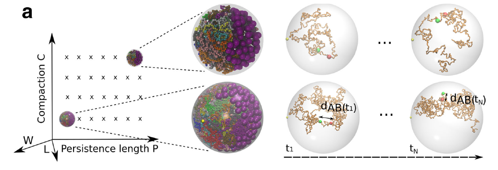
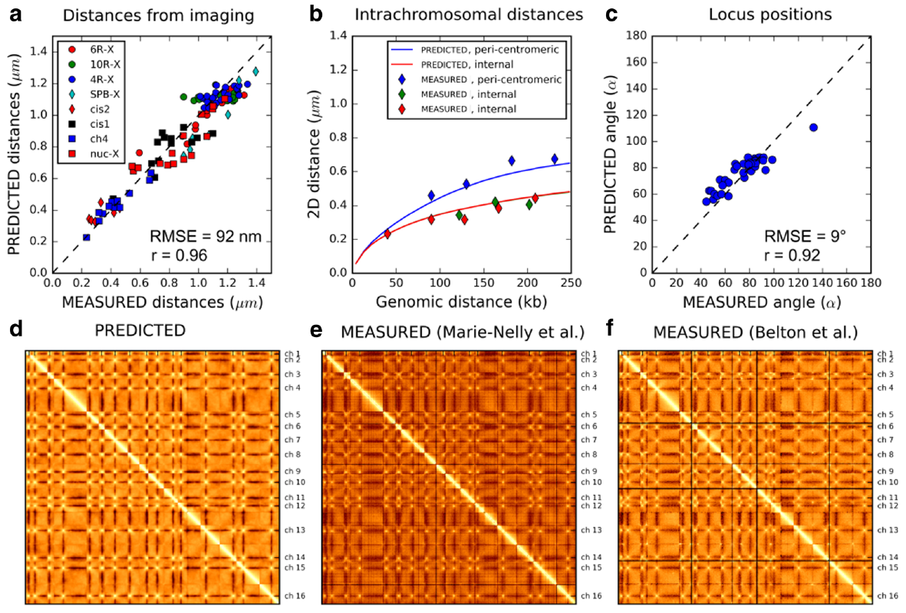

Structure of Yeast Nucleus and DNA repair mechanism
Here is an animation of a coarse grain model use to find out, in Yeast, the most likely physical properties
that account for several imaging and conformation capture experiment. On the top is shown only one chromosome,
with the motion smoothed and the real motion. On the bottom the 16 chromosomes are shown with the rDNA dispalyed as
bigger coarse grained bead. The 16 centromeres (blue bead) of the chromosomes are attached to the spindle pole
body (gold bead) by microtubules which are not displayed in this video.

The image above illustrates the parameters studied in the article "Inferring the physical properties of yeast
chromatin through Bayesian analysis of whole nucleus simulations", namely the persistence length,
the compaction, the length of microtubules and the size of the nucleolus.
Below are displayed the comparisons between the best model and all experiments. The persistence length was estimated to 52-85nm and the compaction
was estimated to 53-65 bp/nm
